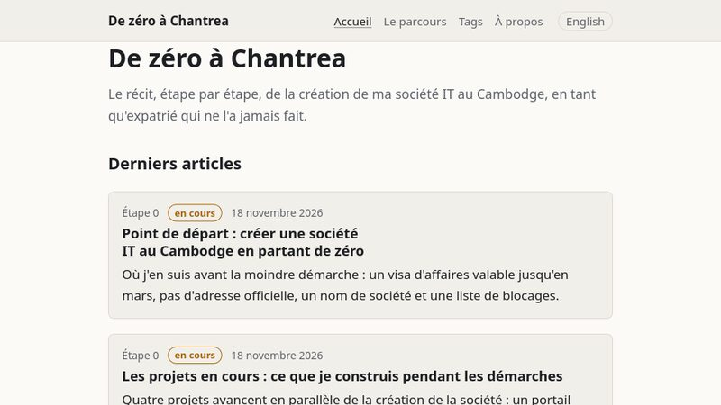
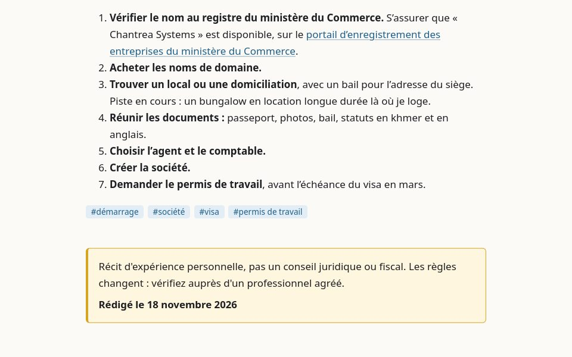
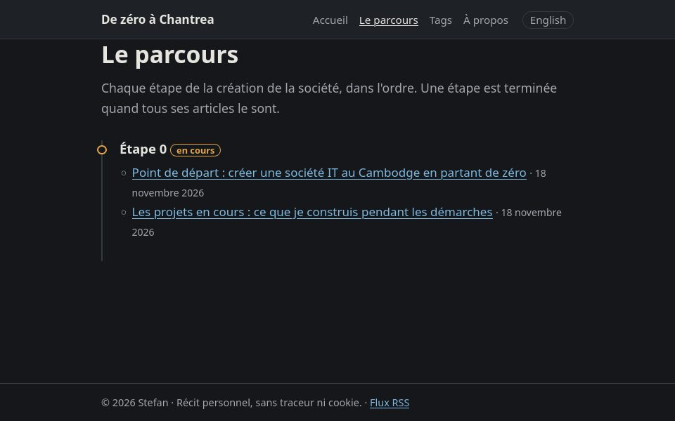
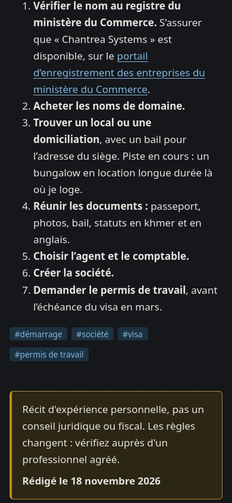
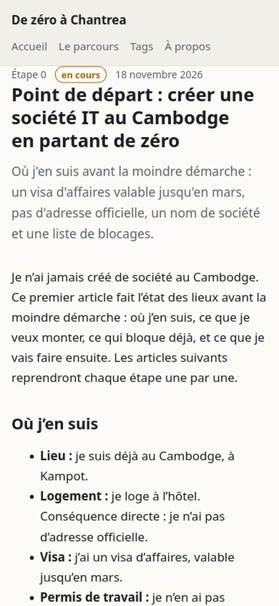
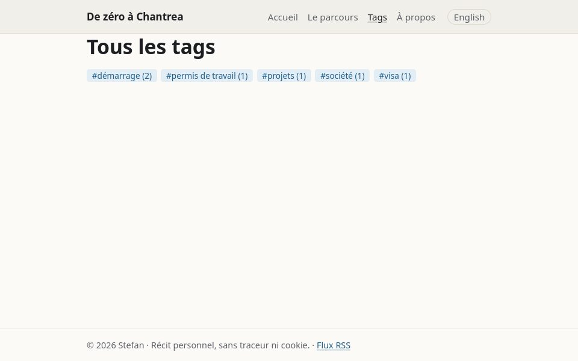

From Zero to ChantreaDe zéro à Chantreaពីសូន្យដល់ Chantrea
Every version of this page since 19 Nov 2026, newest first: what changed, and the captures and videos as the page showed them at the time.
Chaque version de cette page depuis le 19 nov. 2026, de la plus récente à la plus ancienne : ce qui a changé, et les captures et vidéos telles que la page les montrait à l’époque.
គ្រប់កំណែនៃទំព័រនេះ តាំងពីថ្ងៃទី 19 វិច្ឆិកា 2026 ពីថ្មីបំផុតទៅចាស់៖ អ្វីដែលបានផ្លាស់ប្តូរ និងរូបថតអេក្រង់ និងវីដេអូ ដូចដែលទំព័របានបង្ហាញនៅពេលនោះ។
Nothing on this page has been regenerated: every capture and video is the file the site published at the time, recovered from its Git history. What the site never published is not here. Since 21 November 2026, every change to the project page adds a version here, and the captures, videos and Last changes it replaces are kept.Rien sur cette page n’a été régénéré : chaque capture et chaque vidéo est le fichier que le site publiait à l’époque, retrouvé dans son historique Git. Ce que le site n’a jamais publié n’y figure pas. Depuis le 21 novembre 2026, chaque changement de la page du projet ajoute ici une version, et les captures, vidéos et derniers changements qu’il remplace sont conservés.គ្មានអ្វីនៅលើទំព័រនេះត្រូវបានបង្កើតឡើងវិញទេ៖ រូបថតអេក្រង់ និងវីដេអូនីមួយៗ គឺជាឯកសារដែលគេហទំព័របានផ្សាយនៅពេលនោះ ដែលបានយកមកវិញពីប្រវត្តិ Git របស់វា។ អ្វីដែលគេហទំព័រមិនដែលផ្សាយ មិនមាននៅទីនេះទេ។ តាំងពីថ្ងៃទី 21 ខែវិច្ឆិកា ឆ្នាំ 2026 ការផ្លាស់ប្តូរនីមួយៗនៃទំព័រគម្រោង បន្ថែមកំណែមួយនៅទីនេះ ហើយរូបថតអេក្រង់ វីដេអូ និងការផ្លាស់ប្តូរចុងក្រោយ ដែលវាជំនួស ត្រូវបានរក្សាទុក។
From the latest to the first.De la plus récente à la première.ពីកំណែចុងក្រោយ ដល់កំណែដំបូង។
-
Three posts in three languagesTrois articles en trois languesអត្ថបទបី ជាបីភាសា
The page catches up with the repository: the projects post updated on 21 November, a third post on 25 November about the stuck office address and the Odoo-based management tool waiting for a certified Khmer review, and every post now in French, English and Khmer, the Khmer marked as not yet reviewed by a native speaker. Its last changes now run to 25 November.
La page rattrape le dépôt : l’article sur les projets mis à jour le 21 novembre, un troisième article le 25 novembre sur l’adresse du siège bloquée et l’outil de gestion sur Odoo qui attend une relecture certifiée du khmer, et tous les articles désormais en français, en anglais et en khmer, le khmer signalé comme non relu par une personne de langue maternelle. Ses derniers changements vont désormais jusqu’au 25 novembre.
ទំព័រនេះតាមទាន់ឃ្លាំងកូដ៖ អត្ថបទអំពីគម្រោង ដែលបានធ្វើបច្ចុប្បន្នភាពនៅថ្ងៃទី 21 ខែវិច្ឆិកា អត្ថបទទីបីនៅថ្ងៃទី 25 ខែវិច្ឆិកា អំពីអាសយដ្ឋានការិយាល័យកណ្តាលដែលជាប់គាំង និងឧបករណ៍គ្រប់គ្រងលើ Odoo ដែលកំពុងរង់ចាំការពិនិត្យភាសាខ្មែរដែលមានការបញ្ជាក់ផ្លូវការ ហើយឥឡូវនេះ អត្ថបទទាំងអស់មានជាភាសាបារាំង អង់គ្លេស និងខ្មែរ ដោយភាសាខ្មែរត្រូវបានសម្គាល់ថា មិនទាន់បានពិនិត្យដោយអ្នកដែលមានភាសាខ្មែរជាភាសាកំណើត។ ការផ្លាស់ប្តូរចុងក្រោយរបស់វា ឥឡូវនេះរហូតដល់ថ្ងៃទី 25 ខែវិច្ឆិកា។
Taken off the page’s Last changes, kept hereSortis des derniers changements de la page, gardés iciដកចេញពីការផ្លាស់ប្តូរចុងក្រោយនៃទំព័រ រក្សាទុកនៅទីនេះ- Published by GitHub Actions
Every push to
mainnow builds the blog and publishes it to GitHub Pages. The README explains how to add a post, translate it and publish it. - The blog’s foundations
An Astro static site with a sitemap and RSS, in French and English. Every post must follow a schema for its header; the pages and templates come with a light and dark theme and one RSS feed per language, and an About page completes them.
- Publié par GitHub Actions
Chaque push sur
mainconstruit désormais le blog et le publie sur GitHub Pages. Le README explique comment ajouter un article, le traduire et le publier. - Les fondations du blog
Un site statique Astro, avec plan du site et RSS, en français et en anglais. Chaque article doit suivre un schéma pour son en-tête ; les pages et les gabarits arrivent avec un thème clair et sombre et un flux RSS par langue, et une page À propos les complète.
- បោះផ្សាយដោយ GitHub Actions
ឥឡូវនេះ រាល់ការ push ទៅ
mainbuild ប្លុក ហើយបោះផ្សាយវានៅលើ GitHub Pages។ README ពន្យល់ពីរបៀបបន្ថែមអត្ថបទ បកប្រែវា និងបោះផ្សាយវា។ - គ្រឹះនៃប្លុក
គេហទំព័រ static ដោយ Astro ជាមួយ sitemap និង RSS ជាភាសាបារាំង និងអង់គ្លេស។ អត្ថបទនីមួយៗត្រូវតែគោរពតាម schema សម្រាប់ក្បាលអត្ថបទ។ ទំព័រ និងគំរូទំព័រមកជាមួយផ្ទៃភ្លឺ និងផ្ទៃងងឹត និង RSS feed មួយសម្រាប់ភាសានីមួយៗ ហើយទំព័រ «អំពី» បំពេញបន្ថែម។
-
Last changesDerniers changementsការផ្លាស់ប្តូរចុងក្រោយ
The page now ends with a summary of the repository’s latest commits, in English, French and Khmer.
La page se termine désormais par un résumé des derniers commits du dépôt, en anglais, en français et en khmer.
ឥឡូវនេះ ទំព័របញ្ចប់ដោយសេចក្តីសង្ខេបនៃ commit ចុងក្រោយរបស់ repository ជាភាសាអង់គ្លេស បារាំង និងខ្មែរ។
-
Its own pageSa propre pageទំព័រផ្ទាល់ខ្លួន
The blog on setting up the company step by step gets its page in English, French and Khmer, with its journey of numbered steps, the posts so far and screenshots.
Le blog qui raconte la création de la société étape par étape reçoit sa page en anglais, en français et en khmer, avec son parcours d’étapes numérotées, les articles parus et des captures.
ប្លុកដែលរៀបរាប់អំពីការបង្កើតក្រុមហ៊ុនមួយជំហានម្តងៗ ទទួលបានទំព័ររបស់ខ្លួន ជាភាសាអង់គ្លេស បារាំង និងខ្មែរ ជាមួយដំណើរនៃជំហានដែលមានលេខរៀង អត្ថបទដែលបានចេញផ្សាយ និងរូបថតអេក្រង់។
12 captures12 capturesរូបថតអេក្រង់ 12
On the pageSur la pageនៅលើទំព័រ 
On the pageSur la pageនៅលើទំព័រ 
On the pageSur la pageនៅលើទំព័រ 
On the pageSur la pageនៅលើទំព័រ 
On the pageSur la pageនៅលើទំព័រ 
On the pageSur la pageនៅលើទំព័រ 
On the pageSur la pageនៅលើទំព័រ 
On the pageSur la pageនៅលើទំព័រ 
On the pageSur la pageនៅលើទំព័រ 
On the pageSur la pageនៅលើទំព័រ 
On the pageSur la pageនៅលើទំព័រ 
On the pageSur la pageនៅលើទំព័រ